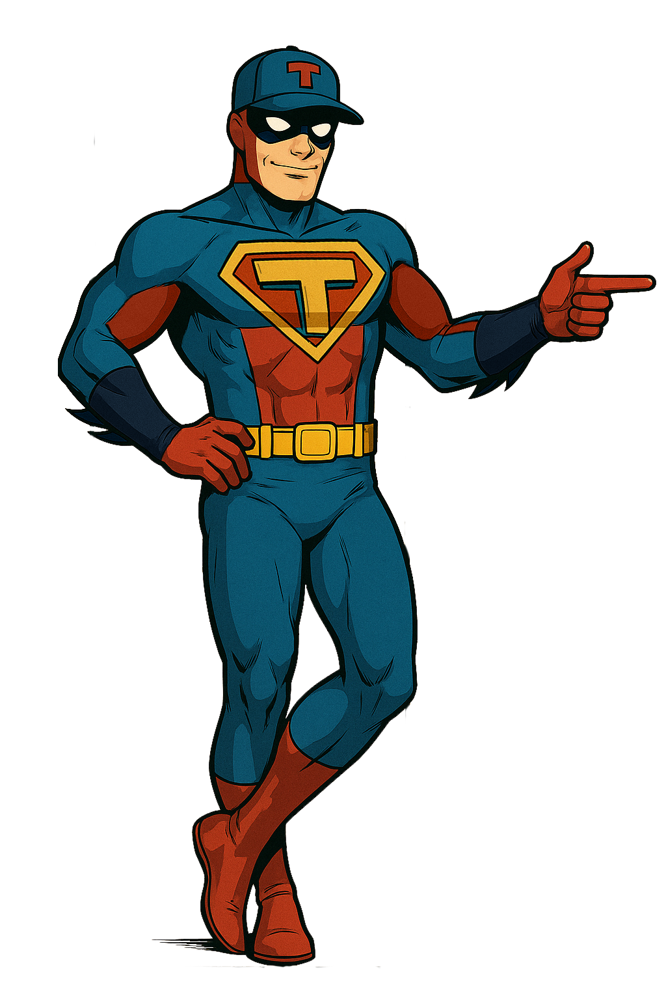

SENA · DESARROLLO MULTIMEDIA Y WEB
Una marca. Cuatro contextos.
Explora los problemas y las necesidades que dan forma a TrendyCom.
16 + 16PROBLEMAS · NECESIDADES
TRENDYMAN TE GUÍA¡Pulsa una pareja!Descubre cómo se conectan
el problema y la necesidad.
el problema y la necesidad.

ANÁLISIS DEL
CONTEXTO PRODUCTIVO
Camisetas geek bajo pedido
Bogotá → Colombia
↻ Sigue las ramas en sentido horario: 01 → 02 → 03 → 04
Cultura geek, camisetas bajo pedido y una comunidad que participa en las próximas tendencias.